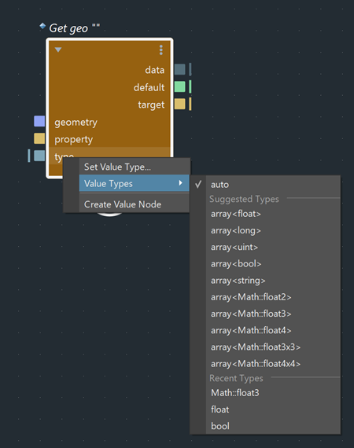
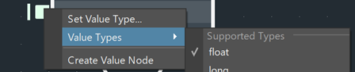
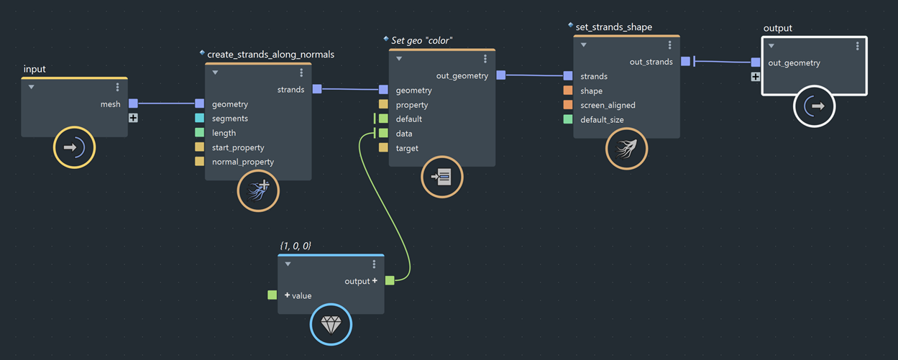
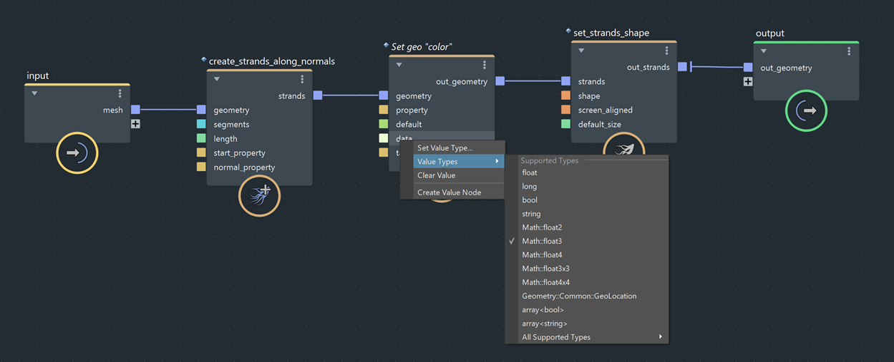
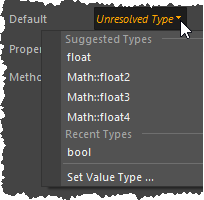
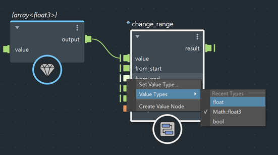

解析端口类型的方式取决于它是引用复合还是局部复合。
value 节点类似，可用于解析类型。因此，您无需创建显式 value 节点以在节点（如 set_geo_property）上解析端口类型。auto 端口在 auto 端口上单击鼠标右键，然后选择“值类型”(Value Types)，系统将提供“建议类型”(Suggested Types)列表。auto 端口可以接受任何类型，子菜单将列出最常用的选项。如果未列出您所需的类型，请选择“设置值类型”(Set Value Type)，然后从“设置值类型”(Set Value Type)编辑器中选择所需的类型。

当前已解析的类型带有复选标记。

要将端口还原为 auto 类型，请单击鼠标右键，然后选择“清除值”(Clear Value)。
有关 auto 端口的详细信息，请参见关于 auto 类型的端口。
同样，可以在过载节点的端口上单击鼠标右键，然后选择“值类型”(Value Types)，系统将提供“支持类型”(Supported Types)列表。
过载节点包含多个定义，每个定义对应不同的数据类型 - 最常用的类型将列在此菜单中。如果未列出您所需的类型，请展开“所有支持的类型”(All Supported Types)子菜单，然后从其他可用过载中进行选择。使用此菜单，还可以浏览复合的可用过载。
从列表中选择一个类型将选择过载，并且当前已解析的类型将带有复选标记。要将端口还原为原始状态（推断类型），请单击鼠标右键，然后选择“清除值”(Clear Value)。
在此图表中，添加了 float3 类型的 value 节点，以将 set_geo_property.data 的类型设置为 float3。

在此图表中，通过选择“值类型 > Math::Float3”(Value Types > Math::Float3)，将 set_geo_property.data 设置为 float3。不需要手动创建 value 节点。

有关过载的信息，请参见可过载。
仅当端口没有传入连接时，才显示“设置值类型”(Set Value Type)、“值类型”(Value Types)和“清除值”(Clear Value)菜单项。否则，端口类型取决于其输入。
除了使用右键单击菜单外，还可以在“参数编辑器”(Parameter Editor)的下拉列表中设置未解析端口的类型。

您还可以使用此功能以最少的步数将一种数据类型转换为另一种数据类型。
在此示例中，如果要在将 value 端口类型设置为 array<float3> 后立即将 (x, y, z) 值从第二象限更改为第一象限，即从 (-1, 1) 更改为 (0, 1)，则所有其他端口也将升级为 float3。在每个端口上单击鼠标右键，然后将其设置为 float。
这样就无需为所有四个端口输入 (x,y,z) 值，也无需创建 value 节点来设置每个端口的类型。

在局部复合的端口上单击鼠标右键，然后展开“值类型”(Value Types)菜单以选择类型。如果未列出您所需的类型，请选择“设置值类型”(Set Value Type)，然后从“设置值类型”(Set Value Type)编辑器中设置它。
在端口上单击鼠标右键并选择“清除值”(Clear Value)时，除了重置端口值外，端口类型也将重置为默认值。
要将包含建议类型列表的“值类型”(Value Types)菜单添加到复合的 auto 端口，请执行下列操作之一：
下面是 get_geo_property.json 中的一个示例：
{
"portName": "type",
"portDirection": "input",
"metadata": [
{
"metaName": "TypeWranglingSuggestedTypes",
"metaType": "string",
"metaValue": "array<float>, array<long>, array<uint>, array<bool>, array<string>, array<Math::float2>, array<Math::float3>, array<Math::float4>, array<Math::float3x3>, array<Math::float4x4>"
}
]
},将元数据名称设置为“TypeWranglingSuggestedTypes”，并提供元数据值中的建议类型列表。
有关详细信息，请参见 ../resources/bif/jsonLibs/get_geo_property.json。
vnnCompound 命令添加元数据将 vnnCompound 命令与 setPortMetaDataValue 标志结合使用，并提供：端口名称、元数据名称 (TypeWranglingSuggestedTypes) 和元数据值（建议类型列表）。
例如：
vnnCompound "bifrostGraph1" "/myCompound" -setPortMetaDataValue "myPort" "TypeWranglingSuggestedTypes" "array<float>, array<long>, array<uint>, array<bool>, array<string>, array<Math::float2>, array<Math::float3>, array<Math::float4>, array<Math::float3x3>, array<Math::float4x4>";发布复合。现在，如果创建 myCompound，当您在 myPort 上单击鼠标右键时，将显示“值类型”(Value Types)菜单。
有关详细信息，请参见 vnnCompound 文档 (MEL) 或 vnnCompound 文档 (Python) 中的 -setPortMetaDataValue 标志。